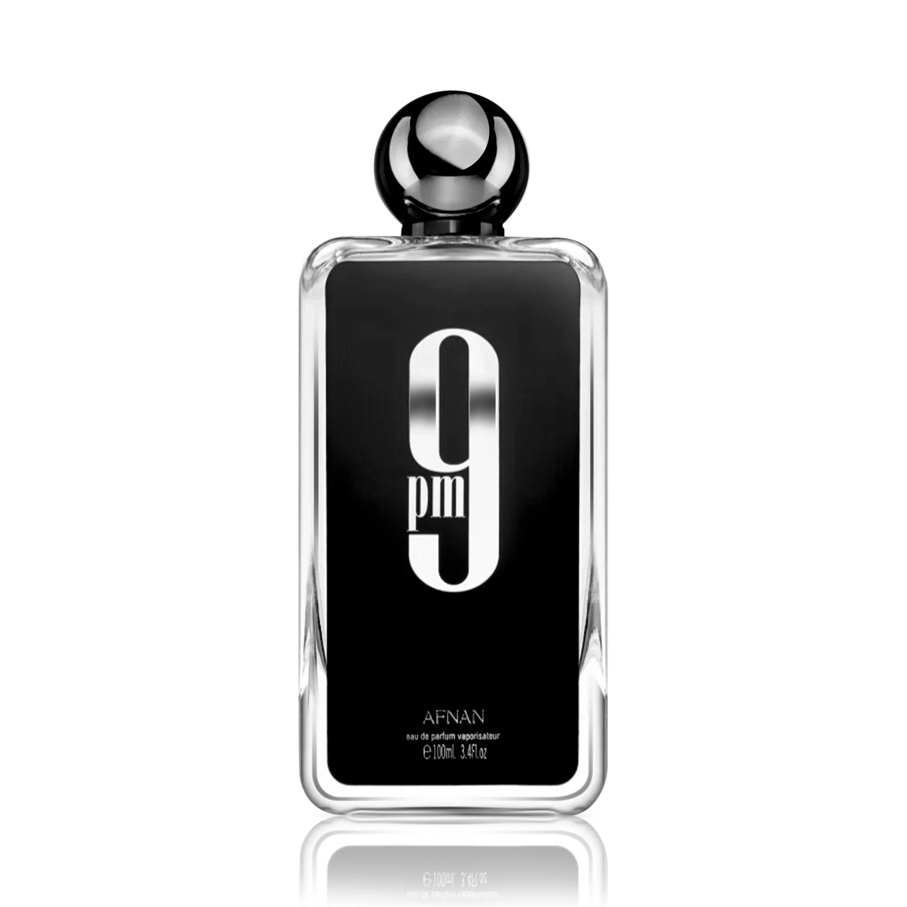

Bade’e Al Oud for Glory de Lattafa Perfumes es una fragancia ambarada, cálida y amaderada, que destaca por su excelente estela. Este perfume es ideal para gustos excepcionales, con una composición que realza el oud de manera impresionante. Sus notas de salida son azafrán, lavanda, nuez moscada. Respecto a las de corazón, tiene OUD (madera de agar), pachulí, grosella negra. Y, por último, las de fondo, con madera de agar, almizcle, pachulí.

El nuevo lanzamiento masculino desde que en 2011 lanzara Legend. La elocuencia de Explorer anuncia un viaje de grandes descubrimientos. Sin duda, un perfume para hombres d espíritu aventurero.fragancia clasificada oriental fougère. Comienza con limón, lavandino y cardamomo para evolucionar hacia un corazón cálido. En esta fase la corteza de canela actúa de nexo entre dos acordes, uno de Blackjack (whisky, café tostado y cuero) y otro mineral